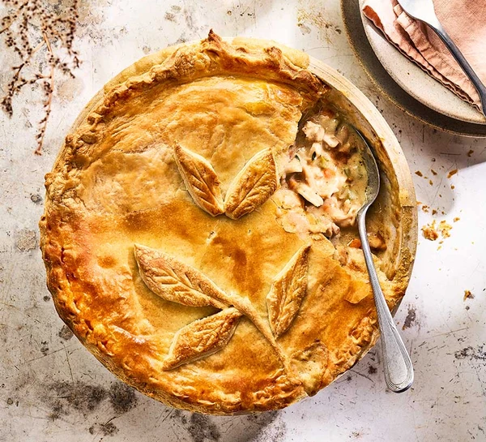

Chicken Pot Pie

Description
Rustle up this chicken pot pie for an easy dinner. A family favourite, it can be made ahead and even frozen for another day to make mealtimes easy
Ingredients
- 2 tbsp vegetable oil
- 8-10 skinless, boneless chicken thighs (about 1kg)
- 2 onions, finely chopped
- 2 celery sticks, finely chopped
- 2 carrots, finely chopped
- 50g butter
- 50g plain flour
- 500ml milk
- 1 chicken stock cube
- 1 tbsp Dijon mustard
- small bunch of thyme, leaves picked, or use 1 tsp dried thyme
- 1 egg, beaten
- 375g sheet ready-rolled puff pastry
Method
- Heat 1 tbsp vegetable oil in a large flameproof casserole or deep frying pan over a high heat. Once hot, brown half the chicken pieces on both sides, season and transfer to a plate or bowl. Repeat with the remaining chicken pieces.
- Reduce the heat to medium and heat the remaining oil in the pan. Fry the onions, celery and carrots for 8-10 mins, stirring occasionally and scraping any browned bits from the base, until all the veg has softened. Tip into the bowl with the chicken and return the pan to a medium heat.
- Melt the butter in the pan and stir in the flour to make a paste. Cook for a couple of minutes, stirring until the paste turns golden. Add a splash of the milk, then whisk to combine. Continue slowly adding the milk, whisking continuously until you have a smooth, creamy sauce.
- Crumble the stock cube into the sauce and add 250ml water. Return to a gentle simmer, then return the chicken and veg to the pan. Stir in the mustard and thyme, and season well. Cover with a lid and simmer over a low heat for 15-20 mins, stirring occasionally until the chicken is tender. Heat the oven to 200C/180C fan/gas 6 if you're cooking the pie straightaway. Shred the chicken in the pan using two forks, pulling it into bite-sized pieces. Once completely cool, the filling will keep chilled for up to two days (providing the chicken is within its use-by date), or frozen for up to two months.
- Transfer the filling to a pie dish (or divide between individual pie dishes). Brush a little of the beaten egg around the rim of the dish. Unravel the pastry and lay it over the top of the dish, then trim the edges with kitchen scissors, leaving a little pastry overhanging the edge. Crimp this excess to seal the pieBrush the pastry all over with some more of the beaten egg and poke a few holes in the top using a skewer (this will release any steam inside during baking). Roll out any pastry offcuts and cut out decorations for the top, if you like. Stick these to the pastry and brush with any remaining beaten egg. Bake for 35-40 mins until the pastry is golden brown and the filling is bubbling at the edge.